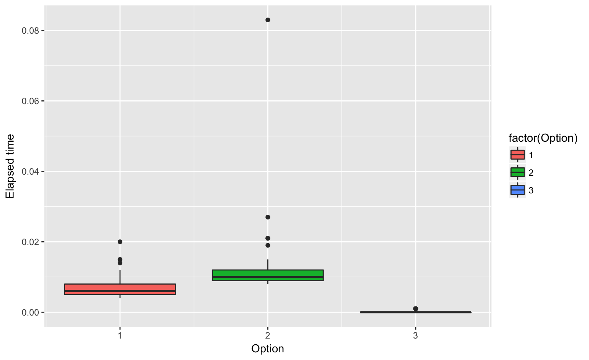

Heike Hofmann
How do we recognize good code? How do we spot bad code?
What does this function do? How does it work?
somefunction <- function (...)
{
k <- length(ll <- list(...))
if (k == 0L)
return(invisible())
mc <- match.call()
for (i in 1L:k) if (!(is.logical(r <- ll[[i]]) && !any(is.na(r)) &&
all(r))) {
ch <- deparse(mc[[i + 1]], width.cutoff = 60L)
if (length(ch) > 1L)
ch <- paste(ch[1L], "....")
stop(paste(ch, " is not ", if (length(r) > 1L)
"all ", "TRUE", sep = ""), call. = FALSE)
}
invisible()
}The browser() function allows stepping through your code.
help(browser)n= executes the next line of codec= continue execution until the end of the function, and exitwhere gives you the stack information, the trace of the active function callsQ exits browser()Putting in
cat()str()head()summary()print()are simple ways to build code up step-wise ensuring that each piece works
somefunction2() function has browser() in first line of function
x <- 1
somefunction2(x==x, 1+1==2, c(7+5==11.99999, 1+1==2))Browser enables:
debug()debug(f) automatically places a browser() statement in the first line of function f
undebug(f) removes it.
options(error=recover) will drop user into browser() upon an erroroptions(error=NULL) default, do nothingoptions(warn=2) sets maximum number of warnings to be 2options(warn=0) warnings are stored until top level function finishesoptions(warn=-1) ignore all warningstraceback() shows the stack at the time the last error occurred
f <- function(x) {
w(x)
g(h(x))
w(x)
}
g <- function(x) {
a <- 10
x
}
h <- function(x) {
w(x)
w(x)
}
w <- function(x) {
if (sample(10, 1) == 1) stop("This is an error!")
}
f()
traceback()> f()
Error in w(x) : This is an error!
> traceback()
5: stop("This is an error!") at #2
4: w(x) at #2
3: h(x) at #3
2: g(h(x)) at #3
1: f()larger(x,y) is supposed to return the element-wise maximum of two vectors
larger <- function(x, y) {
y.is.bigger <- y > x
x[y.is.bigger] <- y[y.is.bigger]
x
}
larger(c(1, 5, 10), c(2, 4, 11)) ## [1] 2 5 11larger(c(1, 5, 10), 6)## [1] 6 NA 10for loops should be used sparingly,rbind (it is known to be very slow)x <- floor(runif(100)*4)
y <- vector("character", length=length(x))
for (i in 1:length(x)) {
y[i] <- switch (x[i]+1, "Sun", "Rain", "Snow", "Hail", default=NA)
}
table(y)## y
## Hail Rain Snow Sun
## 32 24 18 26# the switch statement on the previous slide is equivalent to
# the following lines:
for (i in 1:length(x)) {
if (x[i] == 0) y[i] <- "Sun"
if (x[i] == 1) y[i] <- "Rain"
if (x[i] == 2) y[i] <- "Snow"
if (x[i] == 3) y[i] <- "Hail"
}
# using R's vectors we can reduce this to a single line:
y <- c("Sun", "Rain", "Snow", "Hail")[x+1]Code can be profiled at different levels:
system.time() and proc.time())profr and profviz)system.time()proc.time()
ptm <- proc.time()
t1 <- read.csv("../data/temps.csv")
proc.time() - ptm## user system elapsed
## 4.399 0.127 4.824ptm <- proc.time()
t2 <- readr::read_csv("../data/temps.csv", progress = FALSE)
proc.time() - ptm## user system elapsed
## 0.553 0.092 0.680
ptm <- proc.time()
t3 <- readRDS("../data/temps.rds")
proc.time() - ptm## user system elapsed
## 0.069 0.009 0.095ptm <- proc.time()
load("../data/temps.Rda")
proc.time() - ptm## user system elapsed
## 0.094 0.008 0.109Which of the three options is the fastest?
x <- floor(runif(100)*4)
y <- vector("character", length=length(x))
# Option #1
for (i in 1:length(x)) {
y[i] <- switch (x[i]+1, "Sun", "Rain", "Snow", "Hail", default=NA)
}
# Option #2
for (i in 1:length(x)) {
if (x[i] == 0) y[i] <- "Sun"
if (x[i] == 1) y[i] <- "Rain"
if (x[i] == 2) y[i] <- "Snow"
if (x[i] == 3) y[i] <- "Hail"
}
# Option #3
y <- c("Sun", "Rain", "Snow", "Hail")[x+1]Based on 100 evaluations of samples of size 5000:

Last method is much faster. But why?
profr/profvis package:
Rprofprofvis examplelibrary(profvis)
p <- profvis({
data(diamonds, package = "ggplot2")
plot(price ~ carat, data = diamonds)
m <- lm(price ~ carat, data = diamonds)
abline(m, col = "red")
})profvis creates interactive response with code and flame plot.
Copy and paste the code into your console to run it.